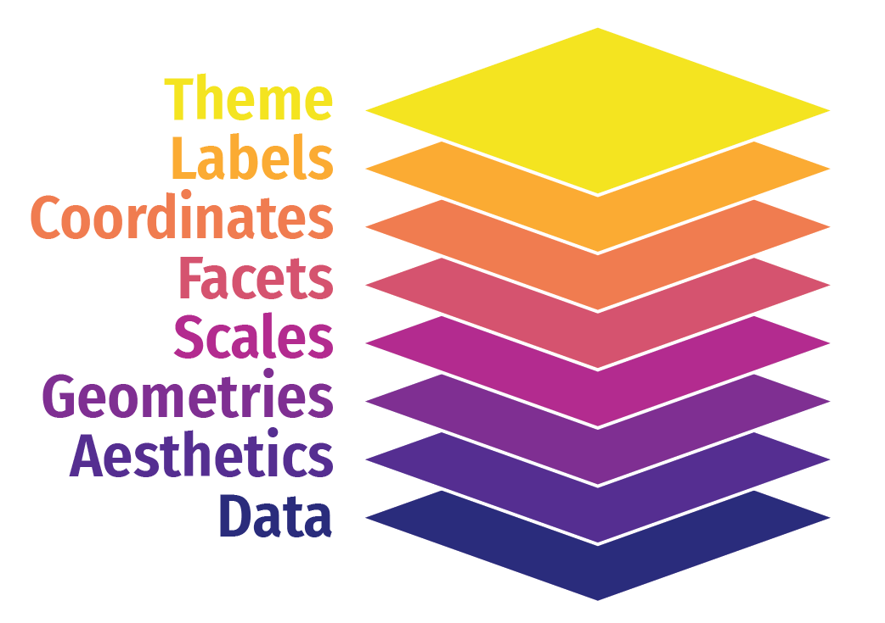
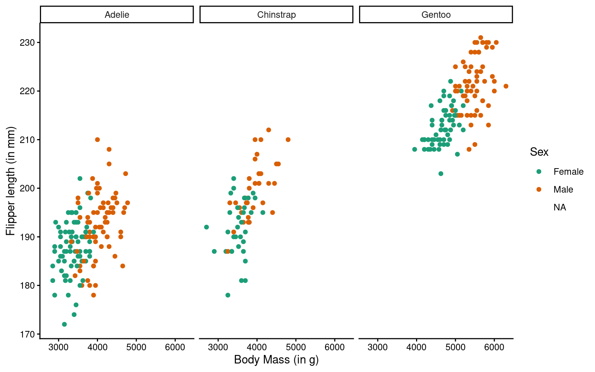
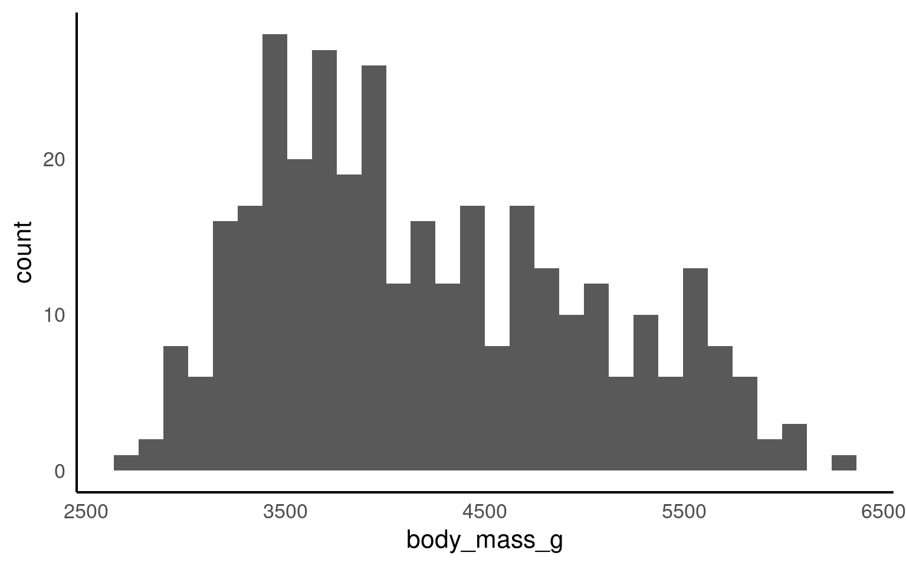
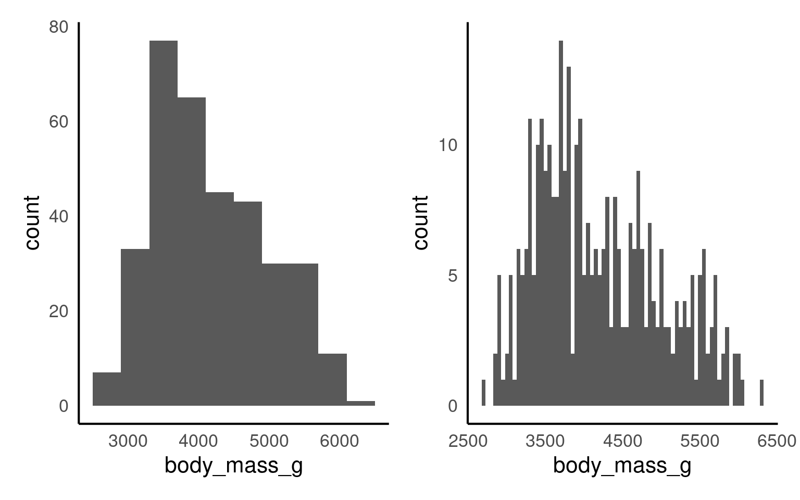
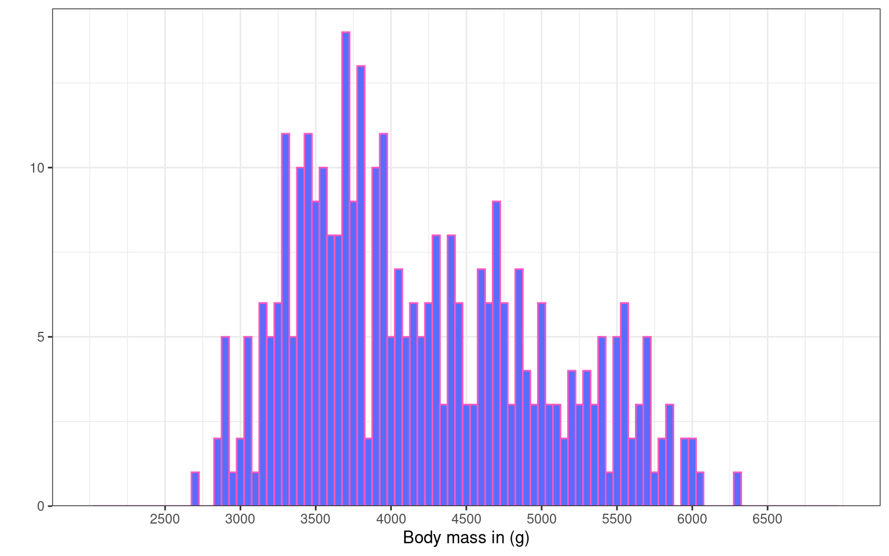
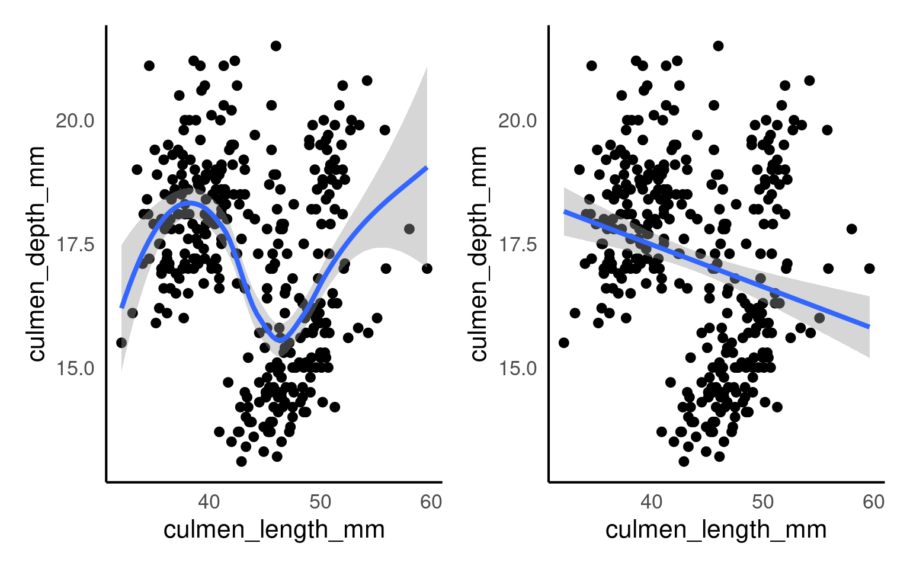
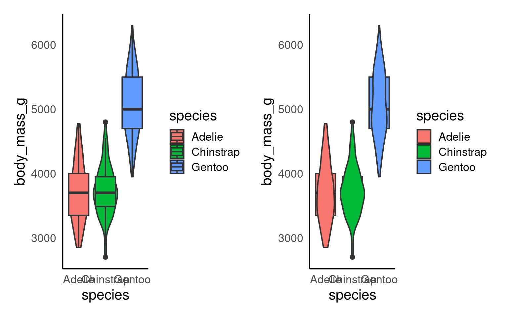
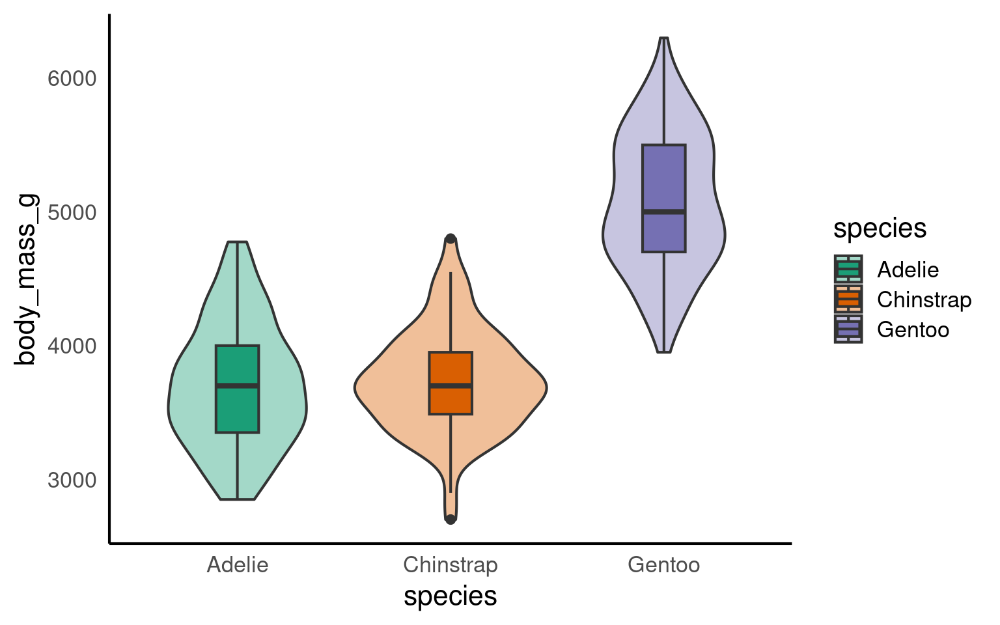
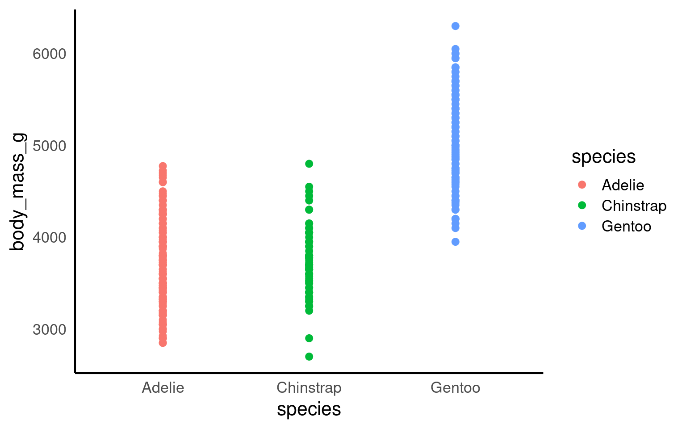
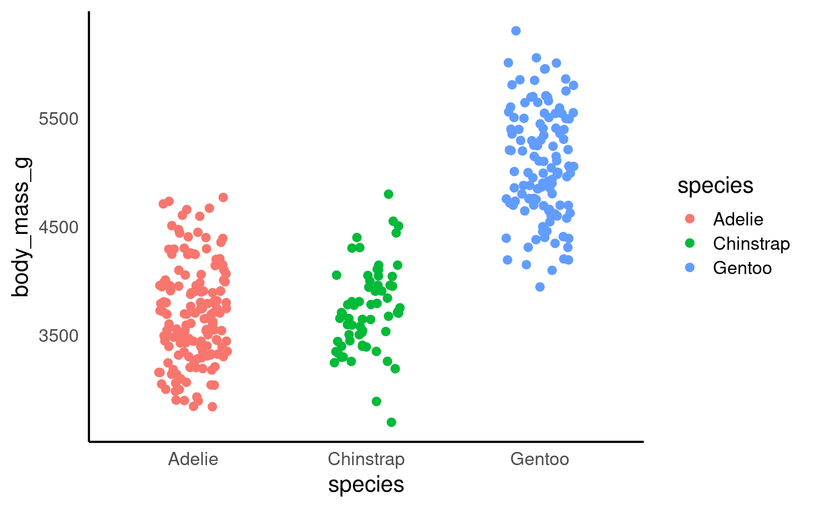

14 ggplot
14.1 Learning Objectives
By the end of this chapter, you will be able to:
Understand the basic structure of a ggplot and how it builds layer by layer.
Map data variables to visual aesthetics like position, color, and shape.
Add and customise plot elements such as labels, themes, and titles.
Use facets to compare subgroups effectively.
Apply best practices for clear, meaningful visualisations.
Data visualisation helps us see relationships, patterns, and surprises that tables of numbers can easily hide. In this chapter, we’ll explore how to use ggplot2{Wickham et al. (2025)} — part of the tidyverse — to build clear, insightful graphics step by step.
We’ll use our dataset of penguin measurements to explore how different species vary in their culmen dimensions. You’ll learn how to go from a simple scatterplot to well-polished figures that communicate data stories effectively.
If you are struggling to write the code for you ggplot, try loading the esquisse Meyer & Perrier (2025) add-in to produce a point-and-click interface that will help you build your plot and produce R code at the end.
Building plots
We are using the package ggplot2 to create data visualisations. It’s part of the tidyverse package. Actually, most people call th package ggplot but it’s official name is ggplot2.
We’ll be using the ggplot2 package to create data visualisations. It’s part of the tidyverse suite of packages. Although many people refer to it simply as ggplot, its official name is ggplot2.
ggplot2 uses a layered grammar of graphics, where plots are constructed through a series of layers. You start with a base layer (by calling ggplot), then add data and aesthetics, followed by selecting the appropriate geometries for the plot.
These first 3 layers will give you the most simple version of a complete plot. However, you can enhance the plot’s clarity and appearance by adding additional layers such as scales, facets, coordinates, labels and themes.

14.1.1 Load the data
You will need to run the script from Chapter 13 or read in the cleaned dataframe directly
| study_name | sample_number | species | region | island | stage | individual_id | clutch_completion | date_egg | culmen_length_mm | culmen_depth_mm | flipper_length_mm | body_mass_g | sex | delta_15_n_o_oo | delta_13_c_o_oo | comments | year | mass_range |
|---|---|---|---|---|---|---|---|---|---|---|---|---|---|---|---|---|---|---|
| PAL0708 | 1 | Adelie | Anvers | Torgersen | Adult, 1 Egg Stage | N1A1 | Yes | 2007-11-11 | 39.1 | 18.7 | 181 | 3750 | Male | NA | NA | Not enough blood for isotopes. | 2007 | mid penguin |
| PAL0708 | 2 | Adelie | Anvers | Torgersen | Adult, 1 Egg Stage | N1A2 | Yes | 2007-11-11 | 39.5 | 17.4 | 186 | 3800 | Female | 8.94956 | -24.69454 | NA | 2007 | mid penguin |
| PAL0708 | 3 | Adelie | Anvers | Torgersen | Adult, 1 Egg Stage | N2A1 | Yes | 2007-11-16 | 40.3 | 18.0 | 195 | 3250 | Female | 8.36821 | -25.33302 | NA | 2007 | smol penguin |
| PAL0708 | 4 | Adelie | Anvers | Torgersen | Adult, 1 Egg Stage | N2A2 | Yes | 2007-11-16 | NA | NA | NA | NA | NA | NA | NA | Adult not sampled. | 2007 | NA |
| PAL0708 | 5 | Adelie | Anvers | Torgersen | Adult, 1 Egg Stage | N3A1 | Yes | 2007-11-16 | 36.7 | 19.3 | 193 | 3450 | Female | 8.76651 | -25.32426 | NA | 2007 | smol penguin |
| PAL0708 | 6 | Adelie | Anvers | Torgersen | Adult, 1 Egg Stage | N3A2 | Yes | 2007-11-16 | 39.3 | 20.6 | 190 | 3650 | Male | 8.66496 | -25.29805 | NA | 2007 | mid penguin |
Let’s build a basic scatterplot to show the relationship between flipper_length and body_mass. We will customise plots further later on in the individual plots. This is just a quick overview of the different layers.
Let’s build a basic scatterplot to show the relationship between flipper_length and body_mass. We will further customise the plots in subsequent sections, but for now, this will provide a quick overview of the different layers.
- Layer 1 creates the base plot that we build upon.
-
Layer 2 adds the
dataand someaesthetics:- The data is passed as the first argument.
- Aesthetics are added via the mapping argument, where you define your variables (e.g., x or both x and y). This also allows you to specify general properties, like the color for grouping variables, etc.
-
Layer 3 adds geometries, or
geom_?for short. This tells ggplot how to display the data points. Remember to add these layers with a+, rather than using a pipe (%>%). You can also add multiple geoms if needed, for example, combining a violin plot with a boxplot. -
Layer 4 includes
scale_?functions, which let you customise aesthetics like color. You can do much more with scales, but we’ll explore later. -
Layer 5 introduces facets, such as
facet_wrap(), allowing you to add an extra dimension to your plot by showing the relationship you are interested in for each level of a categorical variable. -
Layer 6 involves coordinates, where
coord_cartesian()controls the limits for the x- and y-axes (xlim and ylim), enabling you to zoom in or out of the plot. - Layer 7 helps you modify axis labels.
-
Layer 8 controls the overall style of the plot, including background color, text size, and borders. R provides several predefined themes, such as
theme_classic,theme_bw,theme_minimal, andtheme_light.
Click on the tabs below to see how each layer contributes to refining the plot.


You won’t see any data points yet because we haven’t specified how to display them. However, we have mapped the aesthetics, indicating that we want to plot body_mass on the x-axis and flipper_length on the y-axis. This also sets the axis titles, as well as the axis values and breakpoints.
You won’t need to add data = or mapping = if you keep those arguments in exactly that order. Likewise, the first column name you enter within the aes() function will always be interpreted as x, and the second as y, so you could omit them if you wish.
You don’t need to include data = or mapping = if you keep those arguments in the default order. Similarly, the first column name you enter in the aes() function will automatically be interpreted as the x variable, and the second as y, so you can omit specifying x and y if you prefer.
will give you the same output as the code above.

Here we are telling ggplot to add a scatterplot. You may notice a warning indicating that some rows were removed due to missing values.
The colour argument adds colour to the points based on a grouping variable (in this case, sex). If you want all the points to be black — representing only two dimensions rather than three — simply omit the colour argument.
ggplot(data = penguins, mapping = aes(x = body_mass_g, y = flipper_length_mm, colour = sex)) +
geom_point() +
# changes colour palette
scale_colour_brewer(palette = "Dark2") +
# add breaks from 2500 to 6500 in increasing steps of 500
scale_x_continuous(breaks = seq(from = 2500, to = 6500, by = 500)) 
The scale_? functions allow us to modify the color palette of the plot, adjust axis breaks, and more. You could change the axis labels within scale_x_continuous() as well or leave it for Layer 7.

In this step, we’re using faceting to split the plot by species.

Here we adjust the limits of the y-axis to zoom out of the plot. If you want to zoom in or out of the x-axis, you can add the xlim argument to the coord_cartesian() function.
ggplot(data = penguins, mapping = aes(x=body_mass_g, y=flipper_length_mm, colour=sex)) +
geom_point() +
scale_colour_brewer(palette = "Dark2") +
facet_wrap(~ species) +
labs(x = "Body Mass (in g)", # labels the x axis
y = "Flipper length (in mm)", # labels the y axis
colour = "Sex") # labels the grouping variable in the legend
You can change the axis labels using the labs() function, or you can modify them when adjusting the scales (e.g., within the scale_x_continuous() function).

The theme_classic() function is applied to change the overall appearance of the plot.
You need to stick to the first three layers to create your base plot. Everything else is optional, meaning you don’t need to use all eight layers. Additionally, layers 4-8 can be added in any order (more or less), whereas layers 1-3 must follow a fixed sequence.
14.2 Common ggplot2 geoms by data structure and analytical purpose
| Data structure | Example geoms | Typical purpose |
|---|---|---|
| Continuous–continuous |
geom_point(), geom_smooth()
|
Association, correlation, functional form |
| Ordered continuous–continuous (e.g. time series) |
geom_line(), geom_area()
|
Trends, temporal dynamics |
| Continuous–continuous (binned or gridded) |
geom_tile(), geom_raster()
|
Density patterns, spatial or intensity structure (heatmaps) |
| Categorical–continuous |
geom_boxplot(), geom_violin(), geom_col()
|
Group comparisons, distributional contrasts |
| Categorical–categorical (with fill) |
geom_tile(), geom_count()
|
Joint frequencies, contingency structure |
| Univariate continuous |
geom_histogram(), geom_density()
|
Marginal distributions |
14.3 Histogram geom_histogram()
If you want to show the distribution of a continuous variable, you can use a histogram. As with every plot, you need at least 3 layers to create a base version of the plot. Similar to geom_bar(), geom_histogram() only requires an x variable as it does the counting “in the background”.
A histogram divides the data into “bins” (i.e., groupings displayed in a single bar). These bins are plotted along the x-axis, with the y-axis showing the count of observations in each bin. It’s basically a barchart for continuous variables.
Let’s have a look at the weight distribution in our dataset.

The default number of bins is 30 (as shown in Figure 14.1 above). Changing the number of bins (argument bins) allows for more or less fine-tuning of the data. A higher number of bins results in more detailed granularity.
Perhaps it’s more intuitive to modify the width of each bin using the binwidth argument. For example, binwidth = 1 for the weight category would mean each “weight group” represents 1g, while binwidth = 50 would group ages into 50g spans. The plots below show modifications for both bins and binwidth.

The warning message tells us 2 row of data were removed due to containing non-finite values outside the scale range. Have a look at the body mass column (penguins) to see if you can decipher the warning message.
The rows were removed because .
Colours are manipulated slightly differently than in the barchart. Click through each tab to see how you can modify colours, axis labels, margins, and breaks, and apply a different theme.
We can change the plot colours by adding a fill argument and a colour argument. The fill argument changes the colour of the bars, while the colour argument modifies the outline of the bars. Note that these arguments are added directly to the geom_histogram(), rather than within the overall aes(), as we did with the barchart.

You could use:
Hex codes for
fillandcolour, as we did here:geom_histogram(binwidth = 50, fill = "#586cfd", colour = "#FC58BE"). If you want to create your own colours, check out this website.Pre-defined colour names:
geom_histogram(binwidth = 50, fill = "purple", colour = "green"). See the full list here.
Here we removed the label for the y axes Count (to show you some variety) and modified the breaks. The y-axis is now displayed in increasing steps of 5 (rather than 10), and the x-axis has 1-year increments instead of 5.
Notice how the breaks = argument changes the labels of the break ticks but not the scale limits. You can adjust the limits of the scale using the limits = argument. To exaggerate, we set the limits to 15 and 50. See how the values from 15 to 19, and 44 to 50 do not have labels? You would need to adjust that using the breaks = argument.
The expansion() function removes the gap between the x-axis and the bars.
ggplot(penguins, aes(x = body_mass_g)) +
geom_histogram(binwidth = 50, fill = "#586cfd", colour = "#FC58BE") +
labs(x = "Body mass in (g)", # renaming x axis label
y = "") + # removing the y axis label
scale_y_continuous(
# remove the space below the bars (first number), but keep a tiny bit (5%) above (second number)
expand = expansion(mult = c(0, 0.05)),
# changing break points on y axis
breaks = seq(from = 0, to = 20, by = 5)
) +
scale_x_continuous(
# changing break points on x axis
breaks = seq(from = 2500, to = 6500, by = 500),
# Experimenting with
limits = c(2000, 7000)
)
Let’s experiment with the themes. For this plot we have chosen theme_bw()
ggplot(penguins, aes(x = body_mass_g)) +
geom_histogram(binwidth = 50, fill = "#586cfd", colour = "#FC58BE") +
labs(x = "Body mass in (g)", # renaming x axis label
y = "") + # removing the y axis label
scale_y_continuous(
# remove the space below the bars (first number), but keep a tiny bit (5%) above (second number)
expand = expansion(mult = c(0, 0.05)),
# changing break points on y axis
breaks = seq(from = 0, to = 20, by = 5)
) +
scale_x_continuous(
# changing break points on x axis
breaks = seq(from = 2500, to = 6500, by = 500),
# Experimenting with
limits = c(2000, 7000)
)+
theme_bw()
14.4 Scatterplot geom_point()
Scatterplots are appropriate when you want to plot two continuous variables. We can also add a trendline by using geom_smooth(). The default trendline is loess. If you want a linear trendline, you would need to add method = "lm" inside the geom_smooth() function.

Customising the colour of a scatterplot is slightly different from the other plots we’ve encountered so far. Technically, the point is not a “filled-in black area” but rather an extremely wide outline of a circle. Therefore, we cannot use the usual fill argument and instead need to use the colour argument, similar to how we customised the outline of the histogram.
See the tabs below to learn how to change the colour for all points or how to adjust the colour based on groupings.
If we want to change the colour of all the points, we can add the colour argument to the geom_point() function. Likewise, to change the colour of the trendline, we would also use the colour argument. Here, we used pre-defined colour names, but HEX codes would work just as well.

If we want the points to change colour based on another grouping variable, the colour argument should go inside the aes(). If you don’t want to define the colours manually, you can use a colour palette like Brewer (scale_colour_brewer()) or Viridis (scale_colour_viridis_d()).

You can tidy the legend title and group labels using the scale_colour_? function, depending on the palette you’re using (e.g., scale_colour_manual(), scale_colour_brewer and many more).

Your turn
All other layers remain exactly the same as in other plots. Try adding layers to make the plot above prettier:
ggplot(data = penguins, aes(x=culmen_length_mm, y=culmen_depth_mm, colour = species)) +
geom_point()+
geom_smooth(method = "lm",
show.legend = FALSE)+ # stop this layer from appearing in the legend.
scale_colour_manual(values = c("darkorange", "cyan", "purple"),
name = "Species",
labels = c("Adelie penguin", "Chinstrap penguin", "Gentoo penguin"))+
labs(x = "Bill length (mm)", y = "Bill depth (mm)")+
theme_classic() + # place before moving the legend position
theme(legend.position = "top") # move legend to the top
14.5 Boxplot geom_boxplot()
A boxplot is one of the options to display a continuous variable with categorical grouping variable.

Tada! As usual, we can enhance the plot by adding various layers. Click on each tab below to see how.
We can change the colour by adding a fill argument inside the aes(). To customise the colours further, we can add a scale_fill_? layer. If you have specific colours in mind, use scale_fill_manual(). If you prefer pre-defined palettes, such as Brewer, you can use scale_fill_brewer().

We need to relabel the axes. The function to use depends on the variable type. Here, we need scale_x_discrete() for the x-axis and scale_y_continuous() for the y-axis. We can also tidy up the group labels and adjust the breaks on the y-axis (e.g., in steps of 1 instead of 2) within these same functions.
ggplot(penguins, aes(x = species, y = body_mass_g, fill = species))+
geom_boxplot()+
scale_fill_brewer(palette = "Dark2")+
scale_x_discrete(
# changing the label of x
name = "Species",
# changing the group labels of the 2 groups
labels = c("Adelie penguin", "Chinstrap penguin", "Gentoo penguin")) +
scale_y_continuous(
# changing name of the y axis
name = "Body mass (g)",
# changing break labels
breaks = c(seq(from = 3000, to = 6000, by = 500))
)
The legend is superfluous; best to take it off. We can remove the legend by adding the argument guide = "none" to the scale_fill_? function.
Let’s pick a theme we haven’t used yet: theme_dark().
ggplot(penguins, aes(x = species, y = body_mass_g, fill = species))+
geom_boxplot()+
scale_fill_brewer(palette = "Dark2",
guide = "none")+
scale_x_discrete(
# changing the label of x
name = "Species",
# changing the group labels of the 2 groups
labels = c("Adelie penguin", "Chinstrap penguin", "Gentoo penguin")) +
scale_y_continuous(
# changing name of the y axis
name = "Body mass (g)",
# changing break labels
breaks = c(seq(from = 3000, to = 6000, by = 500))
)
14.6 Violin plot geom_violin()
An alternative way to display a continuous variable with a categorical grouping variable is a violin plot.

Your turn
Adjusting the violin plot would be exactly the same as the boxplot. Try to add layers to the base plot above to
ggplot(penguins, aes(x = species, y = body_mass_g, fill = species))+
geom_violin()+
scale_fill_brewer(palette = "Dark2",
guide = "none")+
scale_x_discrete(
# changing the label of x
name = "Species",
# changing the group labels of the 2 groups
labels = c("Adelie penguin", "Chinstrap penguin", "Gentoo penguin")) +
scale_y_continuous(
# changing name of the y axis
name = "Body mass (g)",
# changing break labels
breaks = c(seq(from = 3000, to = 6000, by = 500))
)+
theme_bw()
14.7 Violin-boxplots
So far, we’ve only added one geom_? layer to our plots. However, thanks to ggplot’s layered system, we can add multiple geoms, for example, when creating a violin-boxplot.
Remember, the order of the layers can sometimes make a difference. We’ve seen this already - adding a theme at the end can override earlier arguments like the legend position. Similarly, ggplot + violinplot + boxplot will look different from ggplot + boxplot + violinplot.

See the tabs below to learn how to customise various elements, such as the width of the boxes, and the colour or opacity.
If we want to get any information from the boxplot, we need to place it “on top of” the violin plot. But still, the boxplot is pretty wide and covers important details from the violin plot. To make the information more visible, we can adjust the width of the boxes. Finding an appropriate width might take some trial and error.
Adding colour should be pretty straightforward by now. The code is no different from what we used for the boxplot or violin plot. We need to add the fill argument within the aes(), along with a scale_fill_? layer.
However, we can further customise the plot by adding an opacity argument using alpha to the violin plot geom.

Your turn
14.8 Strip plots
A strip plot (or individual value plot) displays individual data points as dots along a single axis, showing the distribution of a continuous variable, often across different categories, revealing patterns, density, and outliers that summary plots might hide.
Unlike previous examples these show all of the raw data, unlike summaries such as violin or boxplots.

14.8.1 Overlapping data
When we have plenty of data, it becomes highly likes that the points will overlap. This obscures the actual number of data points and has the potential to be misleading. To overcome this we can add slight random displacement (jitter) to prevent overlap and make sure all the data points are visible

Your turn
14.8.2 Beeswarms
A beeswarm plot, also known as a swarmplot, is a graph type that presents individual data points without overlap, creating a distinct “swarming” effect reminiscent of a bee swarm. Here the amount of jitter on the x-axis is directly proportional to the density of points at any given y-value. These can be a great way of combining features of geom_violin while still presenting raw data. To generate beeswarm plots we need to use the function ggbeeswarm::geom_beeswarm()

Your turn
14.9 Line plots geom_line()
A line plot is used to display ordered continuous data, most commonly to show change over time or another meaningful ordering on the x-axis. Unlike scatterplots, line plots impose a strong structural assumption: points are connected in sequence.
Because of this, grouping logic is central to using geom_line() correctly.
If it cannot infer groups, it will connect every point in order of x, producing meaningless zigzags.

This plot is not interpretable. With no grouping information, ggplot2 connects all observations in order of culmen_length_mm,` producing an arbitrary zigzag that has no scientific meaning. This behaviour is correct but often misunderstood.
14.9.1 Grouping logic
When drawing lines, ggplot2 must know which observations belong to the same trajectory. Grouping can be defined:
implicitly (via discrete aesthetics), or
explicitly (via group =).
If neither is supplied, ggplot2 assumes one single group.
14.9.1.1 Implicit grouping via colour or linetype
Discrete aesthetics such as color, fill, or linetype automatically define groups.

14.9.2 Explicit grouping
Explicit grouping defines how lines are drawn without adding a visual aesthetic. This is useful when:
you want lines but not multiple colours, or
grouping variables are not meant to be shown.

This produces the same grouping structure as the coloured version, but all lines are drawn with the same appearance. This can be actively misleading unless additional context is provided.
14.9.3 Multiple grouping levels
More complex situations arise when observations are nested (e.g. repeated measures). In such cases, grouping must be more granular than colouring.
Now:
Lines represent individual penguins
Colours represent species

14.10 Barplot
Bar plots are used to display categorical data, typically to show counts or summaries across groups. However, the interpretation of a bar plot depends critically on:
how bar heights are computed, and
how categories are ordered along the axis.
Both are sources of persistent misunderstanding and deserve explicit treatment.
14.10.1 geom_bar() versus geom_col()
Before discussing ordering, it is important to distinguish between the two bar geoms:
geom_bar()counts observations automatically (default: stat = “count”)geom_col()expects precomputed values (default: stat = “identity”)
This plot shows the number of penguins per species, with bar heights computed internally by ggplot2. This behaviour is convenient but can obscure what is actually being plotted.


14.10.2 Axis ordering
Axis ordering plays a crucial role in helping viewers interpret data quickly and accurately.
For example, ordering categories by value can emphasize trends, such as showing which groups have the highest or lowest measurements, while random or inconsistent ordering can make comparisons confusing and obscure key insights.
By default R will order categories along the axis in alphabetical order:

14.10.2.1 Reordering manually
If we wanted to switch the order we would use the scale_x_discrete() function and set the limits within it (limits = c(“category”,“category”)) as follows:

14.10.2.2 Reordering by values
Or by using features in the forcats package:
fct_infreq()— orders by frequencyfct_reorder()— orders by another numeric variable (e.g., mean body mass)

Your turn
How could we improve the readability of this plot even further?
Direct labelling can remove any ambiguity for values
Rotating plots can improve readability of labels
penguins |>
mutate(species = forcats::fct_infreq(species)) |>
ggplot(aes(x = species)) +
geom_bar()+
# Direct annotation
geom_label(stat='count', aes(label=..count..))+
# reverse order
scale_x_discrete(limits = rev)+
# Rotated axis to enhance readability
coord_flip()+
# Redundant titles removed
labs(x = "",
y = "Count")
14.11 Heatmaps geom_tile()
A heatmap is a visualisation for displaying a numeric value across two discrete dimensions, using colour (fill) to encode magnitude. Heatmaps are especially useful when:
the data form a complete grid (or near-complete), and
patterns across both dimensions are of interest.
In ggplot2, heatmaps are most commonly produced using geom_tile().
14.11.1 Data structure
Heatmaps require three variables:
x-axis: discrete (e.g. month)
y-axis: discrete (e.g. location)
fill: continuous (e.g. measurement intensity)
In this example, we simulate water-quality measurements across lakes and months
# Set seed for reproducibility
set.seed(123)
# Simulate data
heat_data <- expand.grid(
lake = paste("Lake", 1:5), # 5 different lake locations
month = factor(1:12, labels = month.abb) # 12 months (Jan, Feb, ... Dec)
)
# Add simulated measurements for water quality
heat_data$ph <- round(rnorm(nrow(heat_data), mean = 7, sd = 0.5), 2) # pH levels around neutral, with some variability
heat_data$dissolved_oxygen <- round(rnorm(nrow(heat_data), mean = 8, sd = 1), 1) # Dissolved oxygen levels in mg/L
heat_data$nutrients <- round(runif(nrow(heat_data), min = 0, max = 1), 2) # Nutrient concentration, scaled from 0 to 114.11.2 Basic heatmap
A minimal heatmap maps the continuous variable to fill. Each tile represents a single lake–month combination, with colour encoding pH level.

14.11.3 Colour scales and perception
Colour choice is critical in heatmaps. Sequential data (such as pH) should use perceptually uniform colour scales.
The viridis palettes are designed to:
preserve ordering,
remain interpretable under colour vision deficiencies, and
print well in greyscale.
library(colorspace)
# Heatmap for pH levels by lake and month
ggplot(heat_data, aes(x = month, y = lake, fill = ph)) +
geom_tile(color = "white", linewidth =.7) +
scale_fill_continuous_sequential(
palette = "viridis",
name = "pH Level") +
labs(title = "Monthly pH Levels by Lake", x = "Month", y = "Lake") +
theme_minimal()
This version improves interpretability without changing the underlying data or geometry.
14.12 Further Reading, Guides and tips on data visualisation
Fundamentals of Data Visualization: this book tells you everything you need to know about presenting your figures for accessbility and clarity
Beautiful Plotting in R: an incredibly handy ggplot guide for how to build and improve your figures
The ggplot2 book: the original Hadley Wickham book on ggplot2